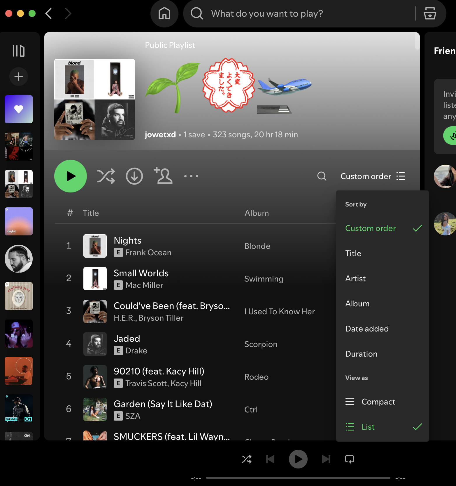

Accessible UI Components

Exploring UI Interactions for Accessibility
Introduction
This site examines the accessibility of UI components across different applications, focusing on keyboard and mouse interactions, usability, and design improvements. In today's digital world, interacting with a website or app should feel effortless, regardless of how someone navigates it. Whether they’re using a keyboard, mouse, touchpad, or screen reader, users expect smooth and intuitive interactions. But the unfortunate reality is that many UI components aren't built with accessibility at the forefront, and even minor design flaws can create major disruptions for people with disabilities.
Dropdowns
For this project, I focused on dropdown menus. By evaluating dropdowns across different applications, I wanted to see where they succeed, fail, and areas for improved, especially considering users who rely on alternative navigation methods. Dropdown menus are everywhere, whether you're sorting a Spotify playlist, picking a photo album in your gallery, or browsing categories on a retail site like Revolve. They help keep interfaces clean and efficient, letting users quickly make selections without cluttering the screen. But despite being so common, dropdowns often ignore key accessibility principles, leading to frustrating and even exclusionary experiences for certain users. A truly accessible dropdown should: support keyboard navigation; maintain logical focus order; provide clear selection indicators; be aware of user error (by preventing accidental exits and/or allowing multiple ways to interact). But not all dropdowns meet these qualities causing usability challenges, for users with motor impairments, visual impairments, or cognitive disabilities. When done well, dropdowns make navigation fluid and intuitive, but when done poorly, they turn a simple task into a struggle. I will examine three dropdown menus below.Dropdown Component
Spotify Dropdown
Photos Dropdown
Revolve Dropdown
Analyzing the Dropdown across applications
Dropdown interactions differences between applications
The process of interacting with the Spotify and Photos dropdown menu was pretty similar and standard across most applications I have interacted with. However, Revolve has more qualities of a retail site dropdown menu, as you can easily accidentally exit the dropdown menu while trying to navigate through it if your mouse goes slightly out of the frame. Meanwhile, even if the mouse is not within the contents of the dropdown menu for Spotify or Photos, it will still remain open until you interact with a different component.
Dropdown Functionality
For Spotify and Photos, you cannot use Ctrl-C or Ctrl-V within the menu. However, you can press ESC to exit the menu, use the arrow keys to navigate menu choices, use Tab to exit the menu (only for Spotify), and press Return to select within the menu. Meanwhile, the Revolve dropdown menu is not responsive to keyboard input—the site is only responsive to the arrow keys for scrolling.
Learnable, Memorable, and Efficient?
The functionalities of Spotify and Photos are learnable because the order remains consistent across different playlists and photo collections, which increases memorability. Revolve, however, lacks these qualities since its dropdown menus vary depending on product categories (dresses, clothing, sale, etc.), meaning the content changes frequently. Additionally, the Revolve dropdown menu is inefficient since it is very easy to accidentally exit while trying to select an option near the bottom.
Comparison of Input Component
Next lets compare the inputs of the dropdown, to learn more about the functionality options!
Comparison of Output Component
Now lets look at the outputs of the dropdown!
Screenreader Interaction
Screenreader:
- Photos: Control option space to select a menu item, ESC to exit, when using a mouse inconsistency with reading the menu options but consistency with reading the menu options that had a submenu & did not explain why you couldn't click some of the menu options that were not available so someone could be clicking there for a while confused why it isn't working. When using a keyboard it explains that some options are dimmed / unavailable and states each option that it is focused on. When an option is selected it just says closing menu does not say which menu option was selected
- Spotify: ctrl option shift down arrow to interact- instead of just arrows, mouse/touchpad: does not read any of the options while hovering over, believes content is empty in the group and can not state the options.
- Revolve: the screenreader did not work at all with the dropdown menu.
State Models
Original States
Revised States
My Remodel
Spotify Dropdown Remodeled + Reasoning
Remodel States
Reflections
Analyzing the usability and accessibility
- One accessibility consideration not addressed in the Revolve dropdown was how quickly it exits the menu whenever the mouse is not hovering through the dropdown. If a user has low visibility, they may struggle to navigate through the menu without it constantly closing. This is a form of exclusion because it hinders their ability to use this component.
- Spotify has two different options for sorting, but listing them in a vertical design makes it harder for people with low visibility.Additionally, the screen reader struggled to interact with the options inside the menu and would not read them out properly.
- Photos performed well in terms of usability, but the focus order could be improved by increasing the usability of the Tab key. The screen reader was unreliable when using the touchpad but performed much better with a keyboard. However, as discussed in the video, not everyone has access to a keyboard, so the screen reader functionality needs to be more inclusive.
Redesigned Accessibilty Changes
- I accounted for the low visibility scenario in my design by making the menu horizontal with a dividing line to indicate that there are two distinct selection choices for every playlist between the “Sort by” and “View as” lists.Changing the “Sort by” selection to a checkmark improved memorability and, in turn, accessibility by creating consistency that can help users with low vision. A screen reader should be able to recognize and read a checkmark for the selected option in both menus, improving navigation for visually impaired users.
Addressing Interaction Mismatches
- My redesign fixes a mismatch between how users naturally interact with selection menus and the dropdown’s current confusing layout. The existing design forces users to work harder to distinguish between sorting and viewing options, making interactions less intuitive. By restructuring it horizontally and adding a dividing line, I make it clearer that "Sort by" and "View as" are separate options. Swapping the up-arrow for a green checkmark improves consistency, making it easier to recognize selections. Standardizing dropdown behavior ensures a more predictable experience, while enhanced hover states improve accessibility. These changes make the dropdown more intuitive, efficient, and user-friendly, addressing the mismatch described in the video.
Accessibility Impact for Users with Impairments
- Spotify's dropdown allows navigation using the Up and Down arrow keys, Tab, and Return key. This is beneficial for users with motor impairments who may struggle with precise mouse movements—such as people with tremors—but can efficiently navigate using a keyboard.
- In Spotify, the dropdown menu immediately exits after selecting a sorting method but remains open after selecting a view option. This inconsistency can be confusing for users with cognitive impairments, attention disorders, or those who rely on predictable interactions.
Designing for User Input Methods, with a focus on Mouse/Touchpad
- On desktop, I think mouse/touchpad interaction is most commonly prioritized, as the majority of users interact with sites and apps using these inputs. However, similar to how the presenter discussed the importance of playground design for fostering community, most social interactions now happen online. It is crucial to prioritize accessibility for all users and create a sense of belonging across web pages and applications to reduce the presence of mismatches. This can impact user experience in almost every aspect of life, from scheduling a doctor’s appointment online to ordering groceries, completing schoolwork, or transferring money. If a user cannot fully interact with a website’s components, they may miss important information or be unable to complete essential tasks.